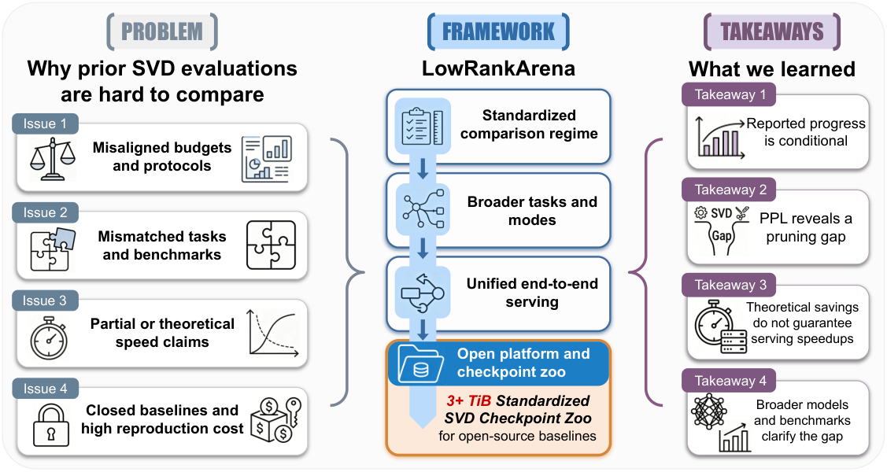
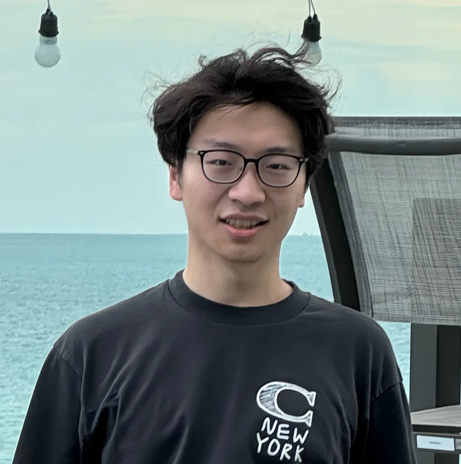
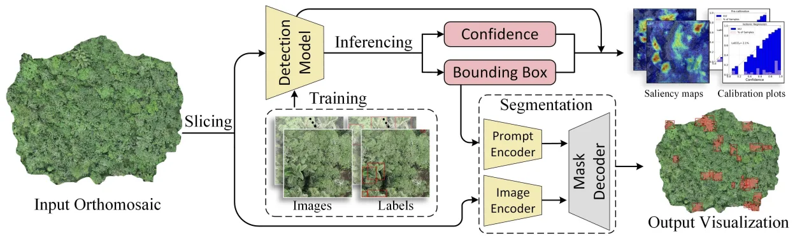
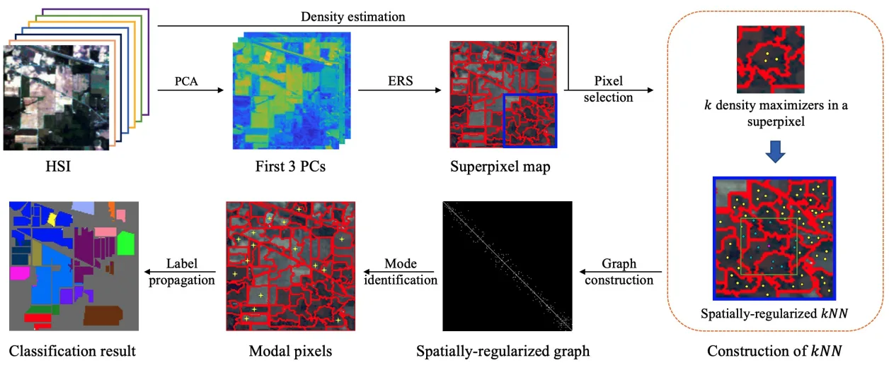

Language Models
LowRankArena: evaluating LLM compression
LowRankArena compares SVD-based language-model compression using shared tasks, compression budgets, and inference measurements.
NeurIPS'26, ED Track, Poster
Assistant Professor of Data ScienceCity University of Hong Kong (Dongguan)
Office: AC4-422
I develop efficient and reliable machine learning methods for language models, geospatial data, and medical images and signals. My work focuses on model compression, interpretability, and learning with limited labels.
PhD and research assistant opportunities: join the group.


Language Models
LowRankArena compares SVD-based language-model compression using shared tasks, compression budgets, and inference measurements.
NeurIPS'26, ED Track, Poster

Geospatial AI
PRISM turns large aerial images into geographic maps of individual palms, combining detection, segmentation, and confidence calibration.
IJCAI'25, Oral

Hyperspectral Learning
S2DL combines superpixels and diffusion geometry to cluster hyperspectral images without labels while reducing computational cost.
TGRS'24
PhD opportunities at CityU and research assistant positions at CityU-DG. For CityU-DG projects, feel free to email me to discuss your interests.
Application detailsResearch in image and signal processing for medicine and remote sensing, advised by Prof. Raymond H. Chan and Prof. Jean-Michel Morel.
Research in ultrasound video analysis and biomedical imaging, advised by Prof. Alison Noble.
Training in computing mathematics with First Class Honours and a minor in Computer Science.
Exchange study in applied mathematics in the Netherlands.